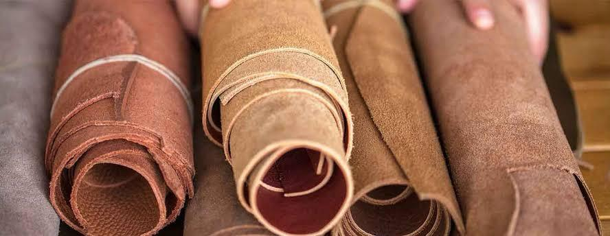

Moving Towards a More Sustainable Leather Industry
At PIEL COLOR, we believe that product performance and environmental responsibility should go hand in hand. We continuously focus on developing solutions that support more responsible leather processing.
Discover Our ApproachCreating Better Solutions for the Leather Industry
Environmental responsibility is an important part of the future of leather manufacturing. At PIEL COLOR, we aim to support our customers with chemical solutions that help improve processing efficiency while considering environmental and product safety requirements.
Our approach focuses on understanding the needs of modern tanneries, following relevant industry requirements, and continuously improving the way our products are developed and applied.
Talk to Our Team
Key Areas of Environmental Responsibility
We focus on practical areas that matter to leather manufacturers and support the ongoing development of more responsible production processes.
Water Conservation
Supporting process optimization and responsible chemical application to help tanneries manage water consumption throughout leather processing.
Responsible Chemical Management
Considering chemical safety requirements and relevant industry regulations when developing and selecting leather chemical solutions.
Product Safety
Supporting customers in understanding product specifications and selecting suitable solutions according to their technical and market requirements.
Process Efficiency
Working with tanneries to optimize chemical applications, improve consistency and reduce unnecessary processing steps where possible.
Continuous Improvement
Exploring better formulations and application methods to respond to changing technical and environmental expectations.
Customer Partnership
Collaborating with our customers to understand their production challenges and identify appropriate technical solutions.
Keeping Up with Evolving Environmental Expectations
The leather industry continues to evolve as environmental requirements and customer expectations become more demanding. We recognize the importance of understanding relevant frameworks and supporting our customers with the technical information they need.
From Understanding to Improvement
A practical approach to helping customers identify opportunities for better leather processing.
Understand
Understand the customer's production process, technical challenges and requirements.
Evaluate
Evaluate available product options and identify suitable technical solutions.
Apply
Support the application process and review the results with the customer.
Improve
Review performance and identify opportunities for continuous process improvement.
Let's Build a More Responsible Future Together
Contact our team to discuss your leather processing requirements and explore suitable chemical solutions.